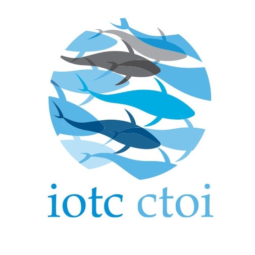

Tabina Irviana
Tabina Irviana
Beranda
Total Active Vessel
1.992 Vessels
Total IUU Fishing Vessel
28 Vessels
Total API
41 API
Produksi TCT di Samudra Hindia
Penggunaan Alat Tangkap
Regional Fisheries Management Organization

IOTC
Indian Ocean Tuna Commission

WCPFC
Western & Central Pacific Fisheries Commission

CCSBT
Commission for the Conservation of Southern Bluefin Tuna
Pelabuhan Pendaratan TCT


Blue Economy Regulation
5 Kebijakan Ekonomi Biru - Agenda Prioritas Kementerian Kelautan dan Perikanan RI